Næmingabók
Jarðfríða»Eg eri jarðfrøðingur. Eg kanni grót og steinar og leiti eftir sporum, sum siga okkum, hvat er hent við landinum. Í hesi bókini verður tú eisini jarðfrøðingur!«
Malli»Og eg eri Malli – steinurin í lummanum hjá Jarðfríðu. Eg havi eina langa søgu at siga tær.«
Minst til: Gita fyrst, áðrenn tú kannar. Tað er heilt í lagi at gita skeivt – tað ger ein jarðfrøðingur eisini.
Vit skulu gera ein tunnil gjøgnum eitt fjall. Kunnu tit hjálpa Jarðfríðu at finna besta staðið?
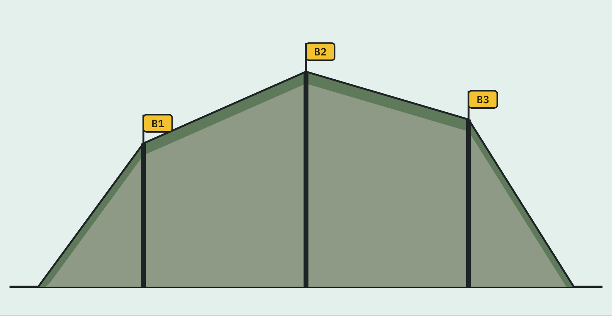
Jarðfríða»Hetta er ein kjarni. Hon vísir grót, sum er borað úr fjallinum. Við sjóneykuni síggi eg smálutir, sum eg annars ikki síggi.«
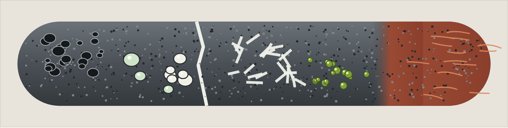
Hygg væl at kjarnanum. Set ein ring um hvørt eyðkenni, tú finnur, og set kross her:
Vel eitt eyðkenni. Hvat kann tað siga okkum um grótið?
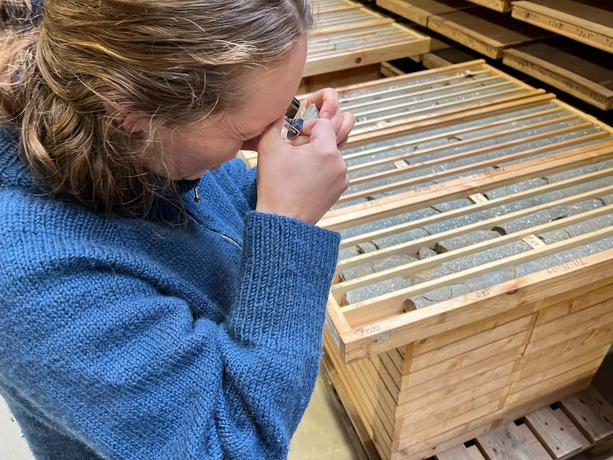
Jarðfríða»Nú skulu tit hyggja at veruligum steinum. Teir kunnu tit nerta við!«
Gott ráð: Ger steinin eitt sindur vátan. So síggja tit litirnar betur.
Malli»Eg havi eisini poknur og krystall. Kanst tú finna tey á mær?«
Jarðfríða»Nú ert tú jarðfrøðingur! Finn ein stein, og vís flokkinum hann.«
Finn ein stein við skúlan ella heima. Hygg væl at honum, og tekna hann.
Er steinurin hjá tær rundur ella kantutur?
Tosið saman: Hygg at steinunum hjá hinum. Finnið tit ein stein við poknum? Ein við ljósum krystallum? Ein reyðan stein? Ein rundan og ein kantutan stein?
Jarðfríða»Vit skulu gera ein tunnil gjøgnum fjallið. Men vit síggja ikki inn í fjallið. Tí bora vit og taka kjarnar upp.«
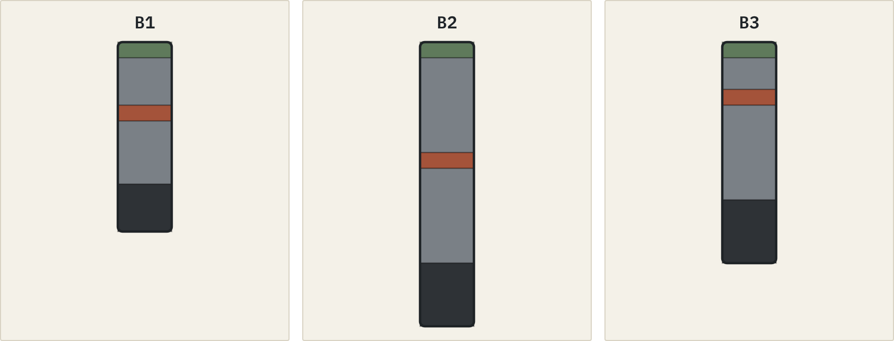
Hygg at kjarnunum. Tekna á fjallið niðanfyri, hvussu tú heldur, at løgini halda fram millum boriholini. Brúka litirnar úr kjarnunum.
Hví heldur tú, at løgini liggja soleiðis?
Minst til: Tað er sjálv metingin, sum hevur týdning – ikki um hon vísir seg at halda.
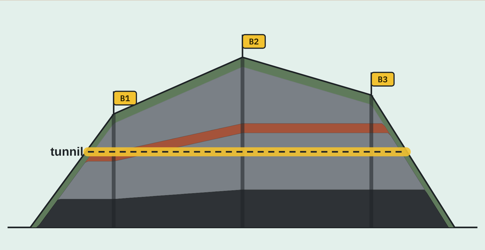
Hvat passaði á tíni tekning? Hvat var øðrvísi?
Jarðfríða»Best er, at tunnilin í hesum døminum gongur gjøgnum støðugt grót. Reyða lagið er bleytari og kann krevja meira trygging.«
Hvar vilt tú hava tunnilin? Hví?
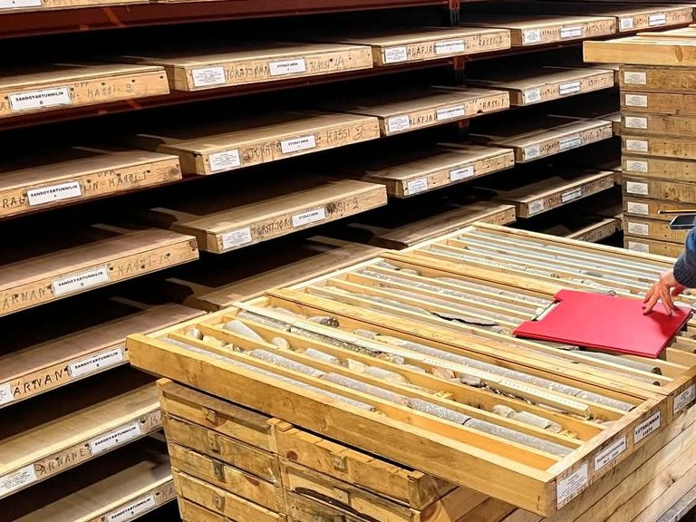
Jarðfríða»Nú skulu tit sjálv vera jarðfrøðingar! Tit gera eitt fjall úr gandadeiggi. Síðan skal eitt annað par finna fram til, hvat er inni í fjallinum hjá tykkum.«
Loyndarmál: Sigið ikki hinum, hvussu fjallið hjá tykkum sær út innaní.
Hvat vísti seg at vera rætt? Hvat var øðrvísi, enn tit væntaðu?
Minst til: Tríggjar boringar vísa ikki alt, sum er millum boriholini.
Hey, eg eiti Malli. Eg var einaferð partur av einum fjalli – hvassur í kantinum. Nú eri eg rundur og liggi í lummanum hjá Jarðfríðu. Hvat hendi við mær á leiðini?
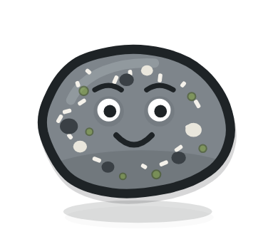
Les søguna hjá Malla – frá gløðandi grótbræðing til ein rundan stein.
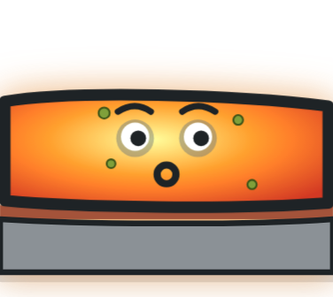
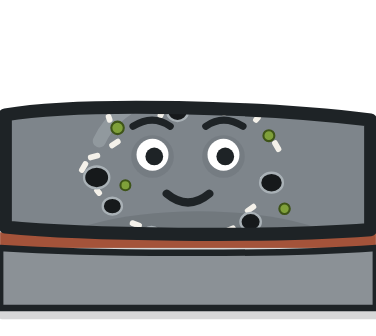
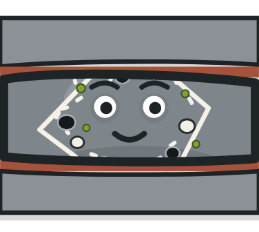
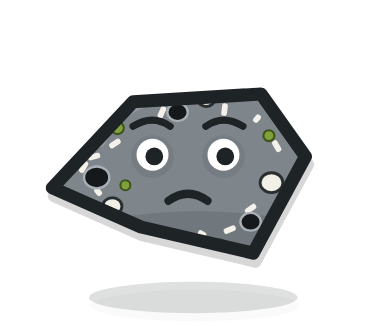
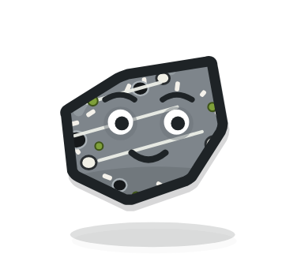
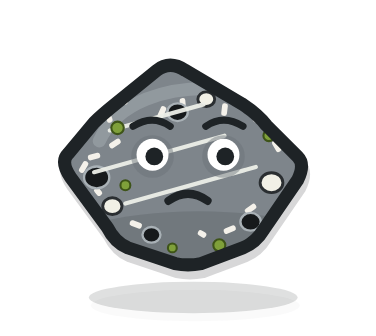
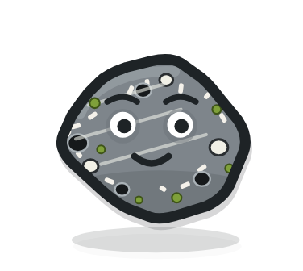
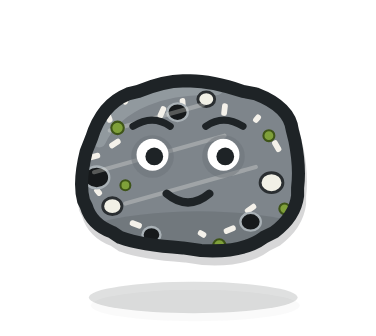
Jarðfríða»Ein steinur ber spor eftir tí, sum hann hevur verið út fyri. Vit kunnu lesa sporini – men vit kunnu ikki vita alt við vissu.«
Hygg at teimum seks steinunum. Skriva bókstavirnar í røð: fyrst tann við flestum kantum, síðst tann rundasta.
Hví legði tú steinarnar soleiðis?
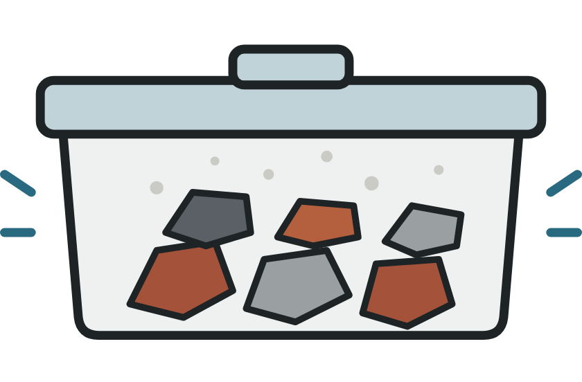
Í dósini gera tit eitt lítið modell av eini á. Steinpettini skumpa hvørt annað, og kantarnir slítast av.
Hvat er broytt?
Hetta er eitt modell: Í dósini tekur tað minuttir. Í ánni og í fjøruni tók tað Malla sera langa tíð.
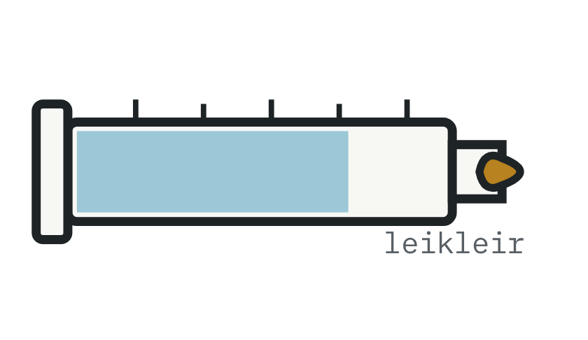
Gitið fyrst: Verður íssúlan …
Ansið eftir: Brúkið ikki glas til vatn, sum skal frysta í einum afturlatnum íláti.
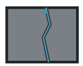
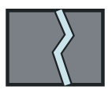
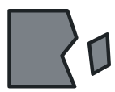
Hví liggja ofta kantutir steinar undir hamrum?
Malli»Kanska breyt eg meg leysan soleiðis! Jarðfeingi sigur »frostsprongt grót« um grót, sum er brotið niður á henda hátt.«
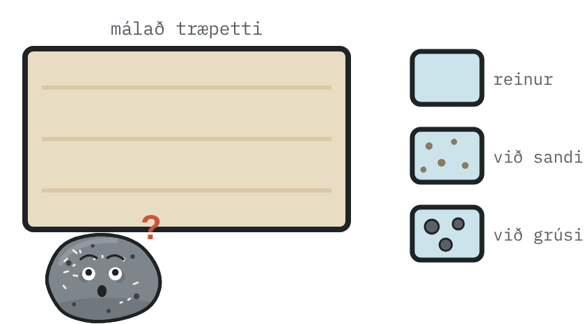
Var tað ísurin sjálvur ella tilfarið í honum, sum gjørdi skøvurnar?
Gott ráð: Brúkið klút ella vøtt um ísterningin, so verða hendurnar ikki ov kaldar.
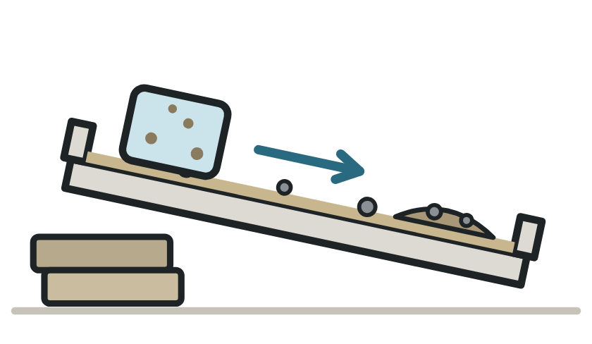
Jarðfríða»Tað, sum liggur eftir, tá ið ísurin er bráðnaður, eitur morena: blandað, leyst tilfar – grót, sandur og leirur – sum jøkulsísur hevur flutt við sær og lagt frá sær.«
Hygg at skapinum og skøvunum. Hvat kunnu sporini benda á? Set kross, og skriva hví.
Minst til: Ein rundur steinur ella ein skøva er ikki í sjálvum sær prógv. Hygg eftir fleiri sporum.
Takið við tykkum:
Gitið fyrst: Hvørjar steinar finna tit – kantutar, rundar ella steinar við skøvum?
Trygd: Ansið væl eftir sjónum, ánni og ferðsluni. Steinar í fjøruni kunnu vera hálir.
| Steinur 1 | Steinur 2 | Steinur 3 | |
|---|---|---|---|
| Kantutur ella rundur? | |||
| Slættur ella grovur? | |||
| Spor (skøvur, poknur, krystall …) | |||
| Hvar lá hann? | |||
| Hvat kann vera hent? (frost, ísur, vatn) |
Set kross við tað, sum tit síggja nærhendis:
Hvat kann vera hent við steininum?
Føroyar eru bygdar av risastórum eldgosum fyri meira enn 50 milliónum árum – lag fyri lag, eins og ein lagkøka.
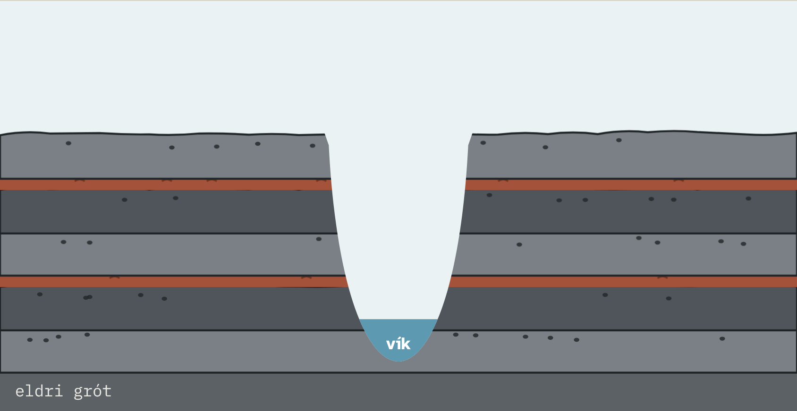
Jarðfríða»Áðrenn vit hyggja at Føroyum, skulu vit vita, hvussu jørðin sjálv er bygd. Hon er umleið 4,6 milliardir ára gomul.«
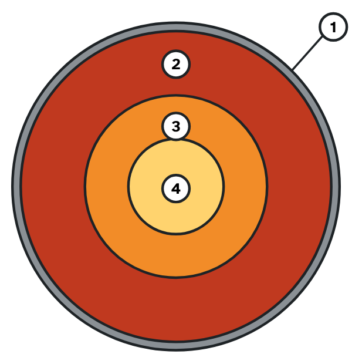
Jørðin er sum ein ferskja. Skorpan er tunn sum hýðið. Kápan er sum aldinið. Í miðjuni er ein kjarni – sum steinurin í ferskjuni.
Skriva navnið á lagunum:
Visti tú: Inn í miðjuna á jørðini eru umleið 6.371 km. Innari kjarnin er heitari enn 5.500 °C.
Skorpan á jørðini er brotin sundur í stór pettir, sum kallast plátur. Tær liggja á kápuni og flyta seg sera spakuliga – bert nakrir sentimetrar um árið.
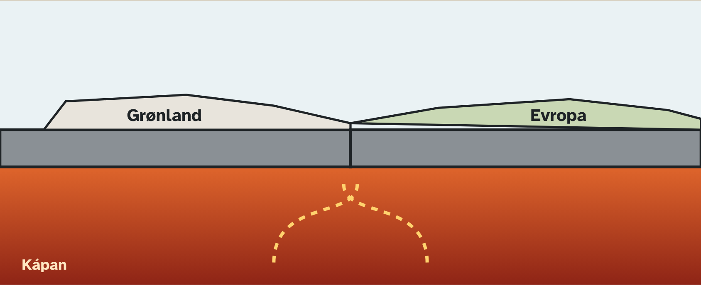
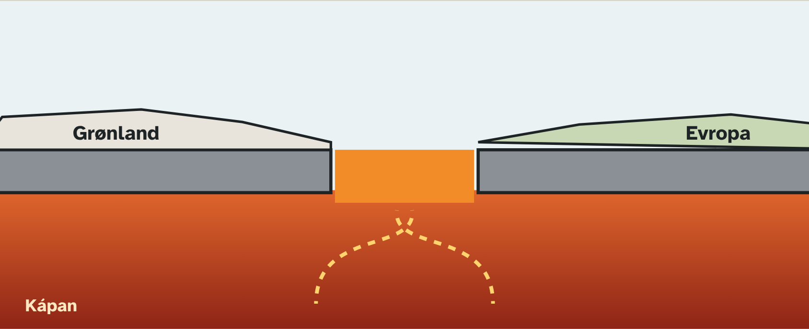
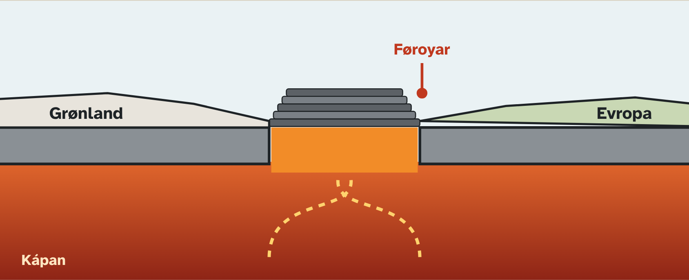
Hví komu eldgos har, sum pláturnar fóru sundur?
Malli»Fyrr var bert umleið 100 km til Grønlands – tað kundi tú súkklað! Í dag flyta Føroyar og Grønland seg umleið 2 cm frá hvørjum øðrum um árið.«
Um tú verður 100 ár – hvussu langt eru Føroyar og Grønland so flutt hvør frá aðrari?
Jarðfríða»Tá ið Grønland og Evropa fóru sundur, kom risastór nøgd av grótbræðing upp. Eldgos eftir eldgos bygdu eitt flatt land av basalti – lag omaná lag. Tað er Føroyar!«
Hygg at einum hamri í Føroyum. Tú sært strípur – tað eru løgini. Tað niðasta er elst.
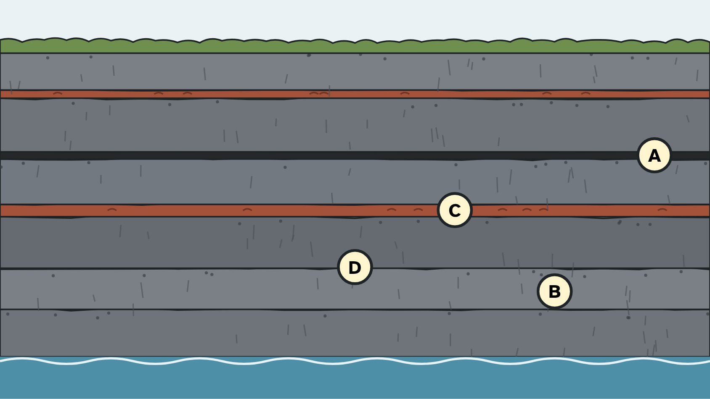
Skriva røtta bókstavin við hvørt orð:
Tekna títt egna land, lag fyri lag. Avger sjálv/ur, hvar pausurnar vóru stuttar, og hvar tær vóru langar. Tekna so eina vík ígjøgnum løgini.
Ábending: Sandur kann litast við krít ella matlit. Salt riggar eisini.
Jarðfríða»Ikki øll grótbræðingin kom upp á yvirflatan. Onkur partur trýsti seg inn í løgini og storknaði har. Tað kalla vit eitt innskot.«
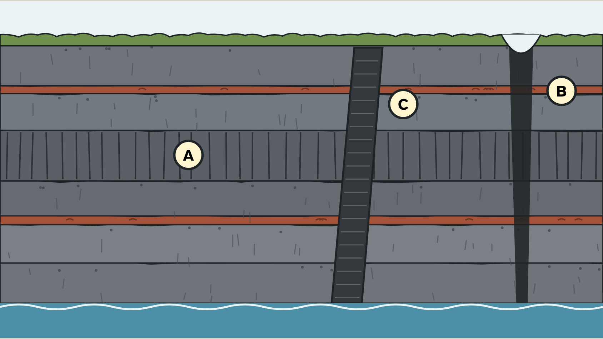
Skriva røtta bókstavin við hvørt orð:
Soleiðis kennir tú eina gong
Dømi í Føroyum
Skriva 1 við tað elsta, 2 við tað næstelsta, 3 og 4 við tað yngsta.
Hví er ein gong yngri enn løgini, hon skerst ígjøgnum?
Tit gera gelé og síggja, hvussu grótbræðing kløvur seg veg – og aftaná kunnu tit eta tað!
Skal geléið etast: Brúkið bert rein amboð, sum eru til mat, og vaskið hendurnar. Hugsið um ofnæmi.
Jarðfríða»Nú skulu tit lesa søguna í landslagnum sjálv. Tit kunnu gera tað næstan allastaðni í Føroyum – har tit síggja ein hamar ella ein fjallasíðu.«
Trygd: Farið ongantíð upp undir bergveggir uttan hjálm og trygdarskógvar. Hyggið helst á avstand. Vaksin skulu altíð vera við. Spyrjið um loyvi, um økið er privat.
Finnið ein hamar ella eina fjallasíðu, har tit síggja strípur. Teknið eina skitsu, og teknið mørkini millum løgini.
Leitið eftir eini strípu, sum skerst upp ígjøgnum løgini – ella eftir eini beinari gjógv.
Hví halda tit, at tað er ein gong?
Malli»Nú vita tit, hvussu landið varð til. Men hvat hendi so, tá ið eldgosini sløknaðu? Tað er ein onnur søga – um ís!«